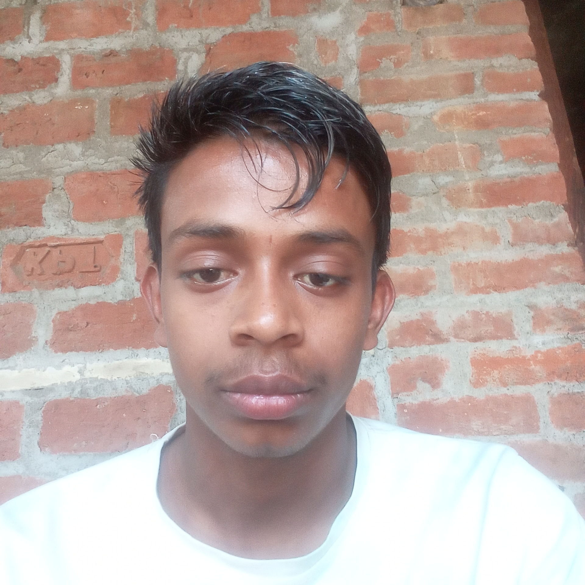

"Indian Super Scientist & NEET Specialist"
Cell - The Unit of Life: Schleiden aur Schwann ne Cell Theory di. Rudolf Virchow ne bataya "Omnis cellula-e cellula" (New cells arise from pre-existing cells).
Magnetic Gravity: Spacecraft ke liye artificial gravity ka concept.
Jalkumbhi Water Treatment: Water purification ki natural technique.
Space Greenhouse: Space mein paudhe ugane ki vidhi.